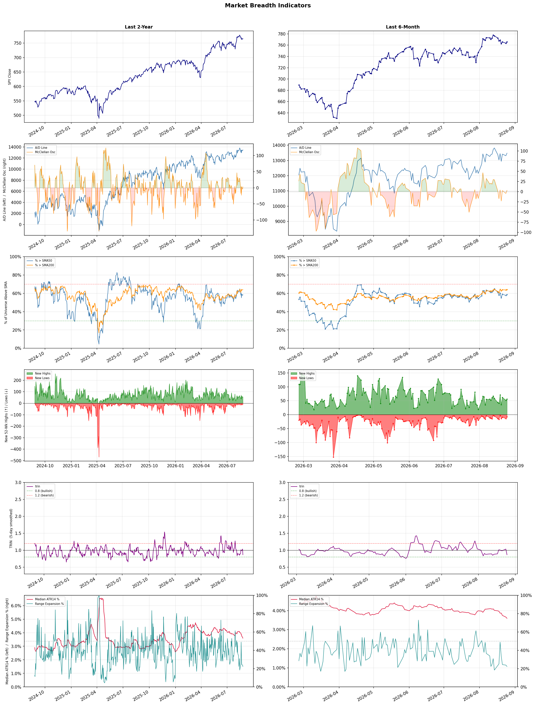

A daily market breadth and sector rotation report for active investors
| Item | Read |
|---|---|
| Regime | Selective Risk-On |
| Risk posture | Selective |
| Universe | 1,331 stocks tracked · 56 new 52-week highs · 30 active swing setups |
| Breadth | 58.6% of tracked stocks are above SMA50 — neutral range, new highs exceed new lows (56 vs 8) |
| Leadership | Diagnostics & Research, Copper, and Health Information Services |
| Weakest groups | Footwear & Accessories, Solar, and Chemicals |
Use this report to prioritize research and chart review; validate entries, stops, liquidity, earnings, and risk before acting.
| Item | Read |
|---|---|
| Primary read | Selective Risk-On regime with Selective risk posture. |
| Research queue | TWST, WGS, NEO, PSNL, NTRA |
| Leadership focus | Diagnostics & Research, Copper, and Health Information Services |
| Caution list | Footwear & Accessories, Solar, and Chemicals |
| Review prompt | Check extension risk, chart location, fundamentals, valuation, and earnings before using any research row. |
| Item | Read |
|---|---|
| Primary read | 0 active risk warnings; use screen output as watchlist input only. |
| Bullish screens | ILMN, FCX, TGB, ACAD, HALO |
| Bearish screens | BAK, OLN, ONON |
| Alerts / levels | Automated trigger, stop, ATR, liquidity, reward/risk, and event-risk levels are pending future enrichment. |
| Review prompt | Open the linked chart, define trigger and invalidation, then check liquidity and event risk independently. |
Risk Posture: Selective — screen backdrop supports selective research in leading industries
Metric context: McClellan below -50 = elevated selling pressure; below -100 = washout territory. Range Expansion = share of stocks with daily range above their 20-day average. Signal Density = share of tracked names appearing in signal screens.
| Breadth Date | % > SMA50 | % > SMA200 | New Highs | New Lows | McClellan | Median Range | Avg Range | Median ATR14 | Range Expansion | Signal Density |
|---|---|---|---|---|---|---|---|---|---|---|
| 2026-08-25 | 58.6% | 64.1% | 56 | 8 | 3.3 | 2.7% | 3.2% | 3.6% | 22.3% | 2.9% |

Prior comparison date: August 24, 2026
| Metric | Prior | Current | Change |
|---|---|---|---|
| Regime | Selective Risk-On | Selective Risk-On | unchanged |
| Risk Posture | Selective | Selective | unchanged |
| % > SMA50 | 57.7% | 58.6% | +1.0 pts |
| % > SMA200 | 63.7% | 64.1% | +0.5 pts |
| New Highs | 52 | 56 | +4 |
| New Lows | 14 | 8 | +6 |
Top-10 industries entering: Asset Management and Medical Care Facilities. Top-10 industries leaving: Insurance Brokers and Oil & Gas Integrated. New multi-signal long setups: ACAD, AMT, DB, GNL, IVZ, MTCH, PCG. New multi-signal short setups: BAK, OLN, ONON.
| Status | Tickers | Read |
|---|---|---|
| Added | ABSI, ACAD, AMT, APPS, BAK, BTE, DB, GNL | New technical screen matches vs prior report. |
| Removed | ABNB, AMGN, BBIO, BBVA, BHP, ELVN, FIVE, HTFL | No longer present in today's technical screen matches. |
| Still Active | CRON, FCX, HALO, HTGC, ILMN, KMX, SOLV, TGB | Appeared in both current and prior reports. |
| Promoted | none | Model Screen Score improved by at least 15 points. |
| Downgraded | none | Model Screen Score declined by at least 15 points. |
| Direction | Industry | ETF | Prior Rank | Current Rank | Days | Rank Change |
|---|---|---|---|---|---|---|
| Rose | Gold | GDX | 87 | 5 | 42 | +82 |
| Rose | Copper | COPX | 82 | 2 | 42 | +80 |
| Rose | Oil & Gas E&P | XOP | 76 | 8 | 42 | +68 |
| Rose | Uranium | URA | 88 | 26 | 28 | +62 |
| Rose | Grocery Stores | N/A | 85 | 27 | 14 | +58 |
Bull: Gold is experiencing a rise in relative strength primarily due to declining Treasury yields, which make gold more attractive as a non-yielding asset, as highlighted by the recent headlines regarding the significant gains in gold ETFs amid falling yields. Additionally, Morgan Stanley's bullish stance on gold following a breakout suggests a growing institutional confidence in gold as a hedge against market volatility, especially in light of fluctuating oil prices and economic uncertainties reflected in the broader market's performance. This combination of macroeconomic factors and institutional interest positions gold favorably against other asset classes.
Bear: While the recent rise in gold's relative strength may be attributed to declining Treasury yields, this trend could be short-lived as rising interest rates and inflation concerns may resurface, diminishing gold's appeal as a non-yielding asset. Additionally, the tax implications for gold ETFs, such as GLD being taxed at a higher rate as a collectible, could deter investors compared to other asset classes, limiting capital inflow into gold mining ETFs like GDX. Furthermore, the recent headlines about valuation resets and industry pressures indicate that the gold mining sector may face significant operational challenges, which could undermine the bullish narrative surrounding gold investments.
Verdict: The gold industry is currently experiencing a rise in strength due to declining Treasury yields, which enhance gold's appeal as a non-yielding asset amid growing institutional interest. However, investors should remain cautious of potential headwinds, including the risk of rising interest rates and inflation concerns, which could diminish gold's attractiveness and impact capital inflow into gold ETFs.
Sources: Yahoo Finance, Google News
Bull: Copper is experiencing rising relative strength primarily due to its critical role in the electrification and AI boom, as highlighted by headlines emphasizing its importance in the transition to renewable energy and technology sectors. The surge in demand for copper, as indicated by the comparison of COPX to other ETFs and the acknowledgment of copper as a key component in AI-related infrastructure, positions it as a vital commodity amid Wall Street's increasing recognition of its value, particularly as it outperforms traditional energy sectors like crude oil. Additionally, strong performance from copper mining stocks, as noted in recent articles, further underscores the bullish sentiment surrounding copper investments.
Bear: While the bullish narrative surrounding copper emphasizes its role in electrification and AI, it overlooks the potential for overcapacity and price volatility driven by speculative investments. Additionally, the recent surge in copper prices could lead to increased mining activity and supply, which may outpace demand growth, ultimately resulting in a price correction. Furthermore, geopolitical tensions and environmental regulations could pose significant risks to the mining sector, dampening the long-term outlook for copper investments.
Verdict: The rising trend in the copper industry is fundamentally driven by its essential role in the electrification and AI boom, which is fueling unprecedented demand across renewable energy and technology sectors. However, investors should remain cautious of the key risk posed by potential overcapacity and price volatility, as increased mining activity in response to current price surges could lead to supply outpacing demand, resulting in a possible price correction.
Sources: Yahoo Finance, Google News
Bull: The rising relative strength of the Oil & Gas E&P sector can be attributed to the recent surge in oil prices, which have topped $100 for the first time since May, as highlighted in the headlines. This price increase, coupled with strong performances from key players like ConocoPhillips and EOG Resources, suggests robust demand and profitability in the sector, particularly as the broader market faces volatility, evidenced by the Dow's significant drop. Additionally, the positive sentiment surrounding energy stocks, as noted in multiple sources, indicates a growing investor confidence in the sector's resilience and potential for continued growth amidst global economic uncertainties.
Bear: While the rising oil prices and strong performances from major players may seem promising, several underlying issues could undermine the sustainability of this trend. The volatility in the broader market, exemplified by the Dow's significant drop, suggests that investor sentiment may be more fragile than it appears, and a potential economic slowdown could lead to decreased demand for oil. Furthermore, geopolitical tensions, regulatory pressures, and the ongoing transition to renewable energy sources pose significant long-term risks to the oil and gas sector, potentially eroding profitability and investor confidence.
Verdict: The oil and gas E&P sector's rise is primarily driven by surging oil prices, which have surpassed $100, reflecting strong demand and profitability among leading companies. However, investors should remain cautious of the key risks posed by potential economic slowdowns, geopolitical tensions, and regulatory pressures, which could undermine this momentum and impact long-term sector viability. It is advisable to monitor these factors closely while considering investment opportunities in the sector.
Sources: Yahoo Finance, Google News
Bull: The recent rise in relative strength for uranium stocks can be attributed to a combination of increasing government support for nuclear energy and a rebound from an oversold market. The commitment of $17.5 billion by Washington to new reactors highlights a significant push towards nuclear energy, which is further supported by the growing demand for clean energy sources amid rising AI power needs. This favorable macroeconomic backdrop, coupled with a recent rally of 57% over the past year, suggests that uranium stocks are rebounding as investors recognize their potential amidst a transition to sustainable energy.
Bear: While the recent government commitment to nuclear energy may appear supportive, the volatility in uranium stocks—evidenced by a 30% crash in ETFs and a sharp selloff in key players—highlights a precarious market sentiment that could undermine long-term stability. Furthermore, the significant drop in valuations after a rally suggests that investor enthusiasm may be overblown, particularly as the industry faces increasing scrutiny over its economic viability and competition from rapidly advancing renewable energy technologies. The reliance on government funding and the current oversupply in the market may also pose serious risks to sustained growth in uranium stocks.
Verdict: The recent rise in uranium stocks can be fundamentally attributed to increased government backing for nuclear energy, highlighted by a substantial $17.5 billion investment in new reactors, and a rebound from previous market overselling. However, investors should remain cautious of the key risk posed by market volatility and the potential for overvaluation, especially as the industry grapples with competition from renewable energy sources and concerns over long-term economic viability.
Sources: Yahoo Finance, Google News
Bull: The Grocery Stores sector is experiencing rising relative strength primarily due to its resilience amid broader economic challenges, as highlighted by recent headlines indicating that certain supermarket stocks, like Albertsons, are thriving despite industry headwinds. Additionally, the emphasis on organic and health-focused products, as seen with Natural Grocers, suggests a growing consumer preference for grocery retailers that offer sustainable and organic options, positioning the sector favorably for continued revenue growth. This trend aligns with the broader market's increasing focus on food stocks, as indicated by The Motley Fool's identification of top food investments for 2026.
Bear: While the grocery sector may currently exhibit rising relative strength, this could be misleading given the broader economic pressures such as inflation and supply chain disruptions that continue to affect consumer spending and profit margins. Additionally, the focus on organic and health-focused products, while popular, often comes with higher costs that may alienate price-sensitive consumers, particularly in a recessionary environment. Furthermore, the strong performance of certain stocks like Albertsons may not be sustainable if they face increased competition from discount retailers and e-commerce platforms that are rapidly gaining market share.
Verdict: The grocery store sector's rising strength is fundamentally driven by consumer resilience and a shift towards organic and health-focused products, which cater to evolving preferences for sustainability. However, a key risk lies in the potential impact of inflation and supply chain disruptions on profit margins, as well as increased competition from discount retailers and e-commerce platforms that could undermine the growth of traditional grocery chains. Investors should closely monitor these economic pressures and competitive dynamics when considering positions in this sector.
Sources: Google News
| Direction | Industry | ETF | Prior Rank | Current Rank | Days | Rank Change |
|---|---|---|---|---|---|---|
| Fell | Airlines | N/A | 9 | 85 | 42 | -76 |
| Fell | REIT - Healthcare Facilities | XLRE | 5 | 68 | 35 | -63 |
| Fell | Apparel Manufacturing | N/A | 17 | 80 | 28 | -63 |
| Fell | Leisure | N/A | 16 | 78 | 28 | -62 |
| Fell | REIT - Retail | N/A | 12 | 72 | 35 | -60 |
Bear: While the bull analyst attributes the airline industry's relative weakness to external economic uncertainties, the reality is that the sector is grappling with fundamental issues that may not resolve in the near term. Rising operational costs, particularly fuel prices, and ongoing labor shortages are straining profit margins, while the potential for recession could lead to a significant drop in consumer demand for travel. Additionally, the increasing competition from low-cost carriers and the potential for regulatory changes could further undermine the profitability of major airlines, making a bullish outlook overly optimistic.
Bull: The relative weakness in the airline industry can be attributed to heightened investor caution amidst ongoing economic uncertainties, as highlighted in recent articles discussing the outlook for major airlines like Delta and American Airlines. Concerns over rising operational costs, potential labor disputes, and fluctuating consumer demand are likely contributing to this trend, as indicated by the focus on which airline stocks to watch and the emphasis on investment strategies for the upcoming years in multiple headlines. Additionally, the industry's performance relative to others may be affected by macroeconomic factors such as inflation and interest rates, which are influencing overall market sentiment.
Verdict: The airline industry's decline is primarily driven by rising operational costs, particularly fuel prices, and persistent labor shortages, which are squeezing profit margins. Additionally, the looming threat of a recession could significantly dampen consumer demand for travel, exacerbating the sector's challenges. Investors should closely monitor these fundamental issues, as well as increasing competition from low-cost carriers, which pose a key risk to any bullish outlook.
Sources: Google News
Bear: While the bull analyst attributes the relative weakness of the healthcare REIT sector to a shift in investor focus towards financial stocks, this perspective overlooks the fundamental challenges facing healthcare facilities themselves. Rising interest rates and inflationary pressures are likely to squeeze profit margins, as operational costs for healthcare providers increase, potentially leading to lower occupancy rates and rental income for REITs. Additionally, ongoing regulatory uncertainties and changes in reimbursement policies could further dampen investor confidence in the sector, suggesting that the bearish sentiment may be more rooted in fundamental issues rather than mere market distractions.
Bull: The relative weakness of the REIT - Healthcare Facilities sector can be attributed to the recent focus on financial stocks, as indicated by multiple sector updates highlighting their performance, which may have diverted investor attention and capital away from healthcare REITs. Additionally, the ongoing discussions around broader market sentiment, as seen in headlines questioning Wall Street's outlook on various stocks, suggest a cautious approach among investors, potentially leading to lower demand for healthcare facilities REITs amidst uncertainties in the financial landscape.
Verdict: The healthcare REIT sector's decline is primarily driven by fundamental challenges such as rising interest rates and inflation, which are increasing operational costs for healthcare providers and potentially leading to lower occupancy rates and rental income. Investors should remain cautious, as ongoing regulatory uncertainties and changes in reimbursement policies pose significant risks that could further undermine the sector's performance. To navigate this environment, it may be prudent to closely monitor economic indicators and regulatory developments that could impact profitability in healthcare facilities.
Sources: Yahoo Finance, Google News
Bear: While the bull analyst highlights potential opportunities in the Apparel Manufacturing sector, the declining relative strength trend suggests that many companies are struggling to adapt to the rapidly changing market dynamics. Increased competition and shifting consumer preferences are not just challenges; they are indicative of a broader industry stagnation, where traditional brands may find it increasingly difficult to maintain market share against agile, trend-sensitive newcomers. Additionally, the emphasis on sustainability and ethical production is likely to further squeeze margins for established players that may lack the infrastructure to pivot quickly, ultimately leading to a more pronounced decline in profitability across the sector.
Bull: The Apparel Manufacturing sector is currently experiencing a decline in relative strength due to heightened competition and shifting consumer preferences, as highlighted by recent headlines emphasizing strong industry momentum and the emergence of top-performing stocks. Factors such as evolving fashion trends, increased online shopping, and sustainability concerns are driving consumers toward brands that align with their values, creating a challenging environment for traditional players. However, the recent focus on stocks poised to benefit from these trends suggests that there are still significant opportunities for growth within the sector.
Verdict: The Apparel Manufacturing sector is experiencing a decline primarily due to intensified competition and a shift in consumer preferences towards sustainability and online shopping, which traditional brands struggle to adapt to. The key risk highlighted by the bear thesis is that established players may face significant margin pressures and loss of market share as they fail to pivot quickly enough to meet evolving consumer demands, potentially leading to broader profitability declines across the industry. Investors should closely monitor companies that demonstrate agility and a commitment to sustainable practices, as they may represent the most viable opportunities in this challenging landscape.
Sources: Google News
Bear: While the bull analyst highlights potential growth opportunities within the Travel and Leisure sector, the overall decline in relative strength indicates a more systemic weakness that cannot be overlooked. The mixed Q1 earnings, particularly in the consumer discretionary segment, suggest that consumer spending may be faltering due to economic uncertainties and rising inflation, which could severely impact leisure spending. Furthermore, geopolitical tensions and the flat performance of European stocks signal that external factors could continue to dampen demand, making it difficult for the sector to recover in the near term.
Bull: The Leisure sector is experiencing a decline in relative strength primarily due to broader economic uncertainties, as highlighted by the flat performance of European stocks amid geopolitical tensions and the anticipation of key economic data. Additionally, the mixed Q1 earnings results in the consumer discretionary segment, as noted in the Acushnet earnings roundup, may have contributed to investor caution. However, the positive outlook from analysts favoring specific stocks within the Travel and Leisure space suggests that there are still compelling opportunities for growth despite these challenges.
Verdict: The Leisure sector's decline is primarily driven by broader economic uncertainties, including rising inflation and geopolitical tensions, which have led to mixed Q1 earnings in consumer discretionary spending and a cautious investor sentiment. The key risk from the bear case is that these external factors may continue to suppress consumer demand, making it challenging for the sector to recover. Investors should remain vigilant and consider focusing on specific stocks within the Travel and Leisure space that analysts view as having strong growth potential, while being mindful of the overarching economic landscape.
Sources: Google News
Bear: While the bull analyst highlights broader market concerns and specific growth narratives, the fundamental reality for the retail REIT sector remains stark: declining consumer confidence, exacerbated by persistent inflation and rising interest rates, is likely to lead to reduced foot traffic and lower rental income for retail properties. Furthermore, the emphasis on "how to invest" in REITs amid economic uncertainty suggests a lack of conviction in the sector's stability, indicating that even positive headlines may not translate into sustainable growth for retail REITs, as investors remain wary of the long-term viability of brick-and-mortar retail in an increasingly digital economy.
Bull: The relative weakness of the REIT - Retail sector can be attributed to broader market concerns regarding consumer spending and the impact of rising interest rates on retail properties, as highlighted by the competitive narratives in recent headlines discussing various REIT investment strategies. Additionally, while there are positive developments such as FrontView REIT's growth, the overall sentiment may be overshadowed by the cautious outlook on retail performance amid economic uncertainty, as indicated by the focus on "how to invest" in REITs during a potentially challenging market environment.
Verdict: The retail REIT sector is experiencing a downturn primarily due to declining consumer confidence and the adverse effects of rising interest rates, which are expected to reduce foot traffic and rental income. The key risk highlighted by the bear case is that even positive developments within specific REITs may not be sufficient to counteract the broader trend of diminishing viability for brick-and-mortar retail in an increasingly digital economy. Investors should remain cautious and consider reallocating investments to sectors less affected by these macroeconomic pressures.
Sources: Google News
| Industry | Rank | ETF | 7d | 14d | 28d | 42d | Chg 42d | Size | 20D | 60D | Composite | Active Setups |
|---|---|---|---|---|---|---|---|---|---|---|---|---|
| Diagnostics & Research | 1 | N/A | 1 | 1 | 14 | 2 | +1 | 16 | 19.6% | 41.5% | 0.957 | 0 |
| Copper | 2 | COPX | 18 | 7 | 67 | 82 | +80 | 6 | 36.8% | 14.9% | 0.914 | 0 |
| Health Information Services | 3 | N/A | 2 | 4 | 12 | 4 | +1 | 12 | 20.2% | 35.8% | 0.911 | 0 |
| Oil & Gas Refining & Marketing | 4 | CRAK | 3 | 6 | 1 | 3 | -1 | 7 | 8.3% | 34.3% | 0.893 | 0 |
| Gold | 5 | GDX | 16 | 26 | 81 | 87 | +82 | 25 | 46.5% | 16.0% | 0.882 | 0 |
| Biotechnology | 6 | XBI | 7 | 13 | 43 | 6 | 0 | 91 | 19.5% | 26.3% | 0.879 | 1 |
| Software - Application | 7 | IGV | 4 | 2 | 21 | 18 | +11 | 74 | 12.4% | 16.6% | 0.840 | 1 |
| Oil & Gas E&P | 8 | XOP | 14 | 19 | 51 | 76 | +68 | 26 | 13.6% | 7.7% | 0.821 | 2 |
| Asset Management | 9 | N/A | 15 | 10 | 37 | 56 | +47 | 29 | 11.3% | 10.4% | 0.814 | 0 |
| Medical Care Facilities | 10 | IHF | 8 | 15 | 4 | 10 | 0 | 9 | 6.2% | 30.4% | 0.810 | 0 |
Rank columns (7d–42d) show the industry's rank that many trading days ago — lower is stronger. Chg 42d = rank change vs 42 trading days ago — positive means the industry moved up. 20D and 60D are the mean stock return within the industry over that period. Active Setups: count of today's swing-trade candidates from this industry appearing across all signal screens.
| Industry | Rank | ETF | 7d | 14d | 28d | 42d | Chg 42d | Size | 20D | 60D | Composite | Active Setups |
|---|---|---|---|---|---|---|---|---|---|---|---|---|
| Footwear & Accessories | 88 | N/A | 85 | 84 | 34 | 40 | -48 | 5 | -14.4% | -16.7% | 0.075 | 0 |
| Solar | 87 | TAN | 88 | 87 | 84 | 65 | -22 | 8 | -7.7% | -43.6% | 0.103 | 0 |
| Chemicals | 86 | N/A | 87 | 88 | 80 | 84 | -2 | 8 | -9.3% | -30.4% | 0.104 | 0 |
| Airlines | 85 | N/A | 65 | 28 | 48 | 9 | -76 | 8 | -8.4% | -3.2% | 0.185 | 0 |
| Utilities - Regulated Electric | 84 | XLU | 73 | 83 | 53 | 30 | -54 | 29 | -5.1% | -1.6% | 0.203 | 1 |
| Resorts & Casinos | 83 | N/A | 53 | 48 | 47 | 54 | -29 | 6 | -4.5% | -2.3% | 0.207 | 0 |
| Auto Manufacturers | 82 | N/A | 81 | 68 | 52 | 81 | -1 | 10 | -5.4% | -13.7% | 0.209 | 0 |
| Utilities - Independent Power Producers | 81 | XLU | 86 | 81 | 83 | 55 | -26 | 5 | -0.4% | -15.8% | 0.210 | 0 |
| Apparel Manufacturing | 80 | N/A | 72 | 41 | 17 | 50 | -30 | 6 | -8.4% | -6.9% | 0.212 | 0 |
| Rental & Leasing Services | 79 | N/A | 68 | 56 | 60 | 71 | -8 | 6 | -2.6% | -13.9% | 0.241 | 0 |
Rank columns (7d–42d) show the industry's rank that many trading days ago — lower is stronger. Chg 42d = rank change vs 42 trading days ago — positive means the industry moved up. 20D and 60D are the mean stock return within the industry over that period. Active Setups: count of today's swing-trade candidates from this industry appearing across all signal screens.
These are research candidates from top-ranked stocks, capped at five names per industry to avoid over-concentration. Returns shown (60D, 120D, 250D) are historical — they reflect where prices have already moved, not forward expectations. Extension Risk flags names that may require extra patience or a better entry point. They are not buy signals.
Chart: TV = TradingView chart (opens in browser); PDF = local chart file (if downloaded).
| Ticker | Name | Industry | Industry Rank | Market Cap | 60D Hist | 120D Hist | 250D Hist | Extension Risk | Research Reason | Chart |
|---|---|---|---|---|---|---|---|---|---|---|
| TWST | Twist Bioscience | Diagnostics & Research | 1 | N/A | 126.4% | 215.1% | 446.2% | Very extended | Top-ranked in industry; very extended | TV |
| WGS | GeneDx Holdings | Diagnostics & Research | 1 | N/A | 68.1% | 10.0% | -30.8% | Extended | Top-ranked in industry; extended | TV |
| NEO | NeoGenomics | Diagnostics & Research | 1 | N/A | 59.6% | 84.5% | 150.6% | Extended | Top-ranked in industry; extended | TV |
| PSNL | Personalis | Diagnostics & Research | 1 | N/A | 51.3% | 93.2% | 253.5% | Extended | Top-ranked in industry; extended | TV |
| NTRA | Natera | Diagnostics & Research | 1 | N/A | 50.7% | 65.8% | 103.2% | Extended | Top-ranked in industry; extended | TV |
| ERO | Ero Copper | Copper | 2 | N/A | 32.7% | 27.4% | 177.1% | Constructive | Top-ranked in industry | TV |
| TGB | Taseko Mines | Copper | 2 | N/A | 28.2% | 16.3% | 198.1% | Constructive | Top-ranked in industry | TV |
| FCX | Freeport-McMoRan | Copper | 2 | N/A | 21.9% | 21.8% | 82.1% | Constructive | Top-ranked in industry | TV |
| HBM | Hudbay Minerals | Copper | 2 | N/A | 5.6% | 24.2% | 162.2% | Constructive | Top-ranked in industry | TV |
| IE | Ivanhoe Electric | Copper | 2 | N/A | -11.5% | -23.9% | 32.2% | Lagging | Top-ranked in industry; lagging | TV |
| TXG | 10x Genomics | Health Information Services | 3 | N/A | 128.7% | 189.3% | 361.3% | Very extended | Top-ranked in industry; very extended | TV |
| HTFL | Heartflow | Health Information Services | 3 | N/A | 61.0% | 108.5% | 59.0% | Extended | Top-ranked in industry; extended | TV |
| VEEV | Veeva Systems | Health Information Services | 3 | N/A | 41.6% | 30.9% | -13.9% | Constructive | Top-ranked in industry | TV |
| TEM | Tempus AI | Health Information Services | 3 | N/A | 36.2% | 34.0% | -9.9% | Constructive | Top-ranked in industry | TV |
| SDGR | Schrodinger | Health Information Services | 3 | N/A | 31.5% | 52.4% | 1.8% | Constructive | Top-ranked in industry | TV |
| PBF | PBF Energy | Oil & Gas Refining & Marketing | 4 | N/A | 64.0% | 50.0% | 174.8% | Extended | Top-ranked in industry; extended | TV |
| MPC | Marathon Petroleum | Oil & Gas Refining & Marketing | 4 | N/A | 43.0% | 61.8% | 107.9% | Constructive | Top-ranked in industry | TV |
| VLO | Valero Energy | Oil & Gas Refining & Marketing | 4 | N/A | 39.6% | 52.2% | 136.6% | Constructive | Top-ranked in industry | TV |
| PSX | Phillips 66 | Oil & Gas Refining & Marketing | 4 | N/A | 35.4% | 45.6% | 87.8% | Constructive | Top-ranked in industry | TV |
| UGP | Ultrapar Participacoes | Oil & Gas Refining & Marketing | 4 | N/A | 29.3% | 35.9% | 100.6% | Constructive | Top-ranked in industry | TV |
These are technical screen matches from existing signal files. They are not trade recommendations. Trigger, stop, ATR, liquidity, reward/risk, and event risk still require separate validation until those inputs are available.
Model Screen Score is weighted by signal count, industry rank, freshness, and setup type. It is not a probability of profit, expected return, or suitability rating. Industry cap: max 3 candidates per industry.
Signal glossary: Momentum Pullback = stock in an uptrend that has pulled back 10–30% and shows re-entry conditions. MA Compression = short- and long-term moving averages converging, often preceding a directional move. Three-Day Up/Down = three consecutive closes in the same direction. New 52Wk High/Low = price reached a new annual extreme.
Chart: TV = TradingView chart (opens in browser); PDF = local chart file (if downloaded).
| Ticker | Industry | Setups | Close | Industry Rank | Signal Count | Model Screen Score | Reason | Chart |
|---|---|---|---|---|---|---|---|---|
| ILMN | Diagnostics & Research | New 52Wk High; Three-Day Up | 224.99 | 1 | 2 | 100 | Multi-signal; top industry breakout | TV |
| FCX | Copper | New 52Wk High; Three-Day Up | 79.91 | 2 | 2 | 100 | Multi-signal; top industry breakout | TV |
| TGB | Copper | New 52Wk High; Three-Day Up | 9.51 | 2 | 2 | 100 | Multi-signal; top industry breakout | TV |
| ACAD | Biotechnology | New 52Wk High; Three-Day Up | 30.57 | 6 | 2 | 93 | Multi-signal; top industry breakout | TV |
| HALO | Biotechnology | New 52Wk High; Three-Day Up | 109.32 | 6 | 2 | 93 | Multi-signal; top industry breakout | TV |
| HTGC | Asset Management | New 52Wk High; Three-Day Up | 17.59 | 9 | 2 | 85 | Multi-signal; top industry breakout | TV |
| IVZ | Asset Management | New 52Wk High; Three-Day Up | 32.72 | 9 | 2 | 85 | Multi-signal; top industry breakout | TV |
| WT | Asset Management | New 52Wk High; Three-Day Up | 24.13 | 9 | 2 | 85 | Multi-signal; top industry breakout | TV |
| CRON | Drug Manufacturers - Specialty & Generic | New 52Wk High; Three-Day Up | 3.51 | 21 | 2 | 77 | Multi-signal; new-high strength | TV |
| SOLV | Medical Instruments & Supplies | New 52Wk High; Three-Day Up | 91.61 | 22 | 2 | 77 | Multi-signal; new-high strength | TV |
| UTZ | Packaged Foods | New 52Wk High; Three-Day Up | 14.25 | 31 | 2 | 70 | Multi-signal; new-high strength | TV |
| TECK | Other Industrial Metals & Mining | New 52Wk High; Three-Day Up | 71.62 | 34 | 2 | 70 | Multi-signal; new-high strength | TV |
| VZ | Telecom Services | New 52Wk High; Three-Day Up | 50.25 | 41 | 2 | 65 | Multi-signal; new-high strength | TV |
| KMX | Auto & Truck Dealerships | New 52Wk High; Three-Day Up | 64.22 | 42 | 2 | 65 | Multi-signal; new-high strength | TV |
| V | Credit Services | New 52Wk High; Three-Day Up | 384.14 | 43 | 2 | 65 | Multi-signal; new-high strength | TV |
| PK | REIT - Hotel & Motel | New 52Wk High; Three-Day Up | 16.17 | 45 | 2 | 65 | Multi-signal; new-high strength | TV |
| MTCH | Internet Content & Information | New 52Wk High; Three-Day Up | 42.18 | 51 | 2 | 65 | Multi-signal; new-high strength | TV |
| RUM | Internet Content & Information | New 52Wk High; Three-Day Up | 10.23 | 51 | 2 | 65 | Multi-signal; new-high strength | TV |
| DB | Banks - Regional | New 52Wk High; Three-Day Up | 39.04 | 55 | 2 | 65 | Multi-signal; new-high strength | TV |
| AMT | REIT - Specialty | MA Compression; Three-Day Up | 178.57 | 74 | 2 | 50 | Multi-signal; compression setup | TV |
| GNL | REIT - Diversified | MA Compression; Three-Day Up | 9.25 | 75 | 2 | 50 | Multi-signal; compression setup | TV |
| PCG | Utilities - Regulated Electric | MA Compression; Three-Day Up | 18.36 | 84 | 2 | 40 | Multi-signal; compression setup | TV |
| ABSI | Biotechnology | Momentum Pullback | 9.63 | 6 | 1 | 58 | Single-signal; top industry pullback | TV |
| APPS | Software - Application | Momentum Pullback | 10.83 | 7 | 1 | 58 | Single-signal; top industry pullback | TV |
| GRND | Software - Application | Momentum Pullback | 15.69 | 7 | 1 | 58 | Single-signal; top industry pullback | TV |
| BTE | Oil & Gas E&P | Momentum Pullback | 4.61 | 8 | 1 | 50 | Single-signal; top industry pullback | TV |
| KOS | Oil & Gas E&P | Momentum Pullback | 2.73 | 8 | 1 | 50 | Single-signal; top industry pullback | TV |
Bearish setups — stocks making new lows or showing persistent downside patterns. Validate carefully before acting.
| Ticker | Industry | Setups | Close | Industry Rank | Signal Count | Model Screen Score | Reason | Chart |
|---|---|---|---|---|---|---|---|---|
| BAK | Chemicals | New 52Wk Low; Three-Day Down | 1.63 | 86 | 2 | 15 | Multi-signal; new-low weakness | TV |
| OLN | Chemicals | New 52Wk Low; Three-Day Down | 17.37 | 86 | 2 | 15 | Multi-signal; new-low weakness | TV |
| ONON | Footwear & Accessories | New 52Wk Low; Three-Day Down | 28.83 | 88 | 2 | 15 | Multi-signal; new-low weakness | TV |
How To Use This Report
| Use | Purpose |
|---|---|
| Market map | Start with breadth, regime, risk warnings, and what changed since the prior report. |
| Industry scan | Use leading, deteriorating, rising, and declining industries to focus research. |
| Research queue | Treat long-term candidates as names for deeper fundamental, valuation, and chart review. |
| Technical review | Treat bullish and bearish screen matches as watchlist inputs that require independent trigger, stop, liquidity, and event-risk checks. |
| Source follow-up | Use chart links and source files to verify raw inputs before relying on any row. |
What This Report Is Not
| Not | Meaning |
|---|---|
| Investment advice | The report does not evaluate personal objectives, risk tolerance, tax situation, account type, or suitability. |
| Buy/sell recommendation | Named tickers are research candidates or screen matches, not recommendations to transact. |
| Price target | The report does not provide fair value estimates, targets, or expected returns. |
| Trade plan | Trigger, stop, sizing, reward/risk, liquidity, and event-risk review remain separate user work. |
| Performance claim | Model Screen Score is not validated historical performance or a forecast of future results. |
| Item | Note |
|---|---|
| Version | Daily Report Methodology v1 |
| Model Screen Score | Screen-fit rank based on signal count, industry rank, freshness, and setup type. |
| Not predictive proof | The score is not expected return, probability of profit, historical validation, or suitability analysis. |
| Industry ranks | Composite industry ranks use existing daily ranking outputs and historical rank columns when available. |
| Research candidates | Long-term rows are research candidates from ranked stocks and leading industries, with historical returns labeled as historical only. |
| Technical matches | Bullish and bearish rows are screen matches requiring independent chart, trigger, stop, liquidity, and event-risk review. |
| Source | Status | Rows | Path |
|---|---|---|---|
| Market breadth | present | 1253 | breadth_20260825.csv |
| Industry composite rankings | present | 88 | all_industry_composite_20260825.csv |
| Top ranked stocks | present | 295 | top_ranked_composite_20260825.csv |
| All ranked stocks | present | 1331 | all_stocks_composite_sorted_20260825.csv |
| Top momentum pullbacks | present | 1478 | top_momentum_pullbacks_20260825.csv |
| MA compression | present | 1478 | ma_compression_stocks_20260825.csv |
| Three-day up/down | present | 118 | three_day_up_down_stocks_20260825.csv |
| New 52-week members | present | 64 | breadth_new_52wk_members_20260825.csv |
This report is generated from automated technical screens and is for informational and research purposes only. It is not investment advice, a solicitation, or a recommendation to buy or sell any security. Past performance is not indicative of future results. You are solely responsible for your own investment decisions. Consult a licensed financial advisor before acting on any information herein.